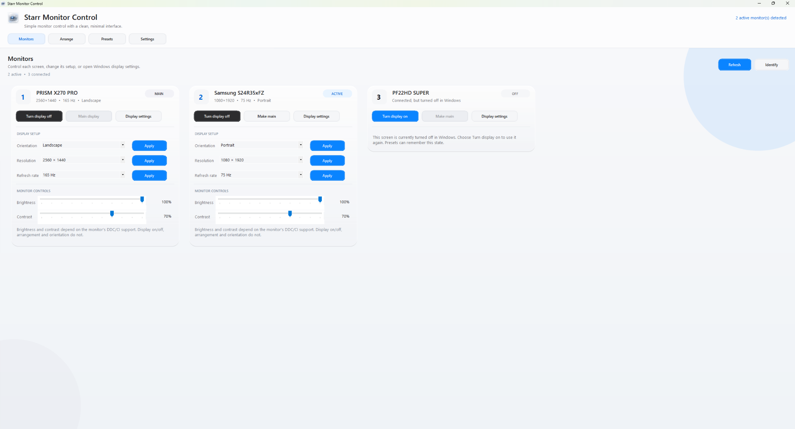
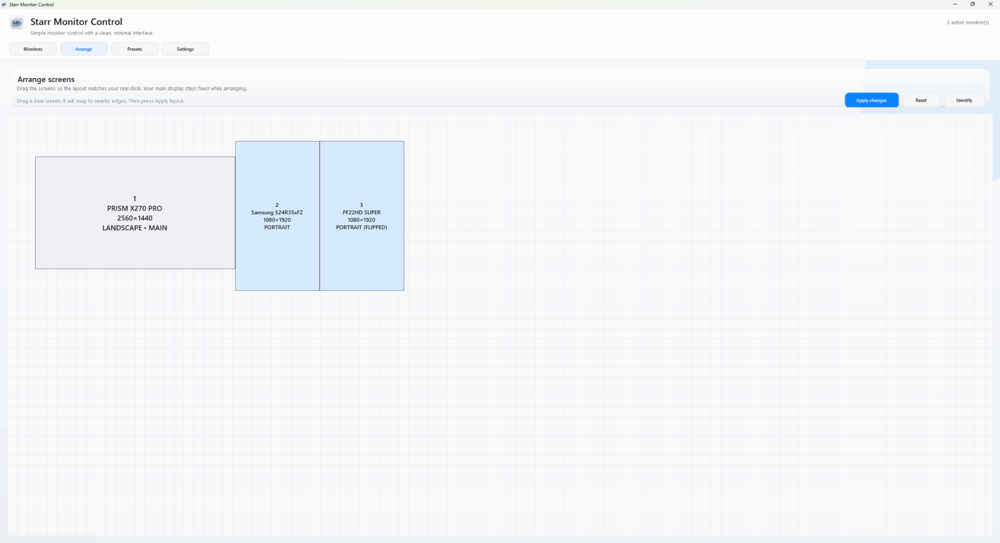
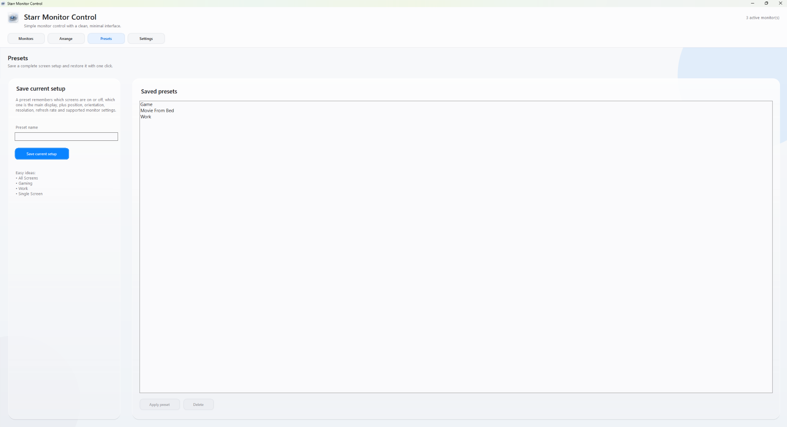
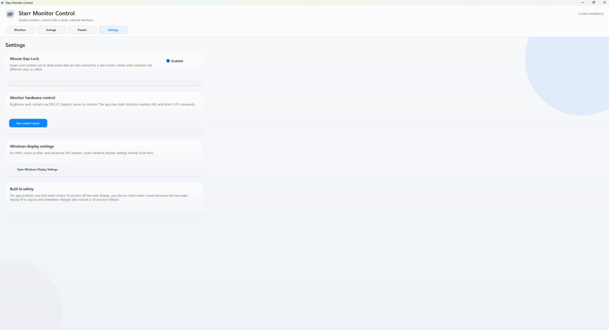

Move from one monitor setup to another without rebuilding it manually.
APPLICATION DESIGN · UI/UX · DEVELOPMENT
Monitor Control.
A Windows desktop utility designed to make a multi-monitor setup predictable: switch displays on or off, choose the primary screen, restore saved presets, preserve monitor positions and change resolution from one control surface.
LIVE APPLICATION / MONITORS
WINDOWS DESKTOP UTILITY

The main control surface keeps display identity, power state, primary-screen control, orientation, resolution, refresh rate and supported hardware controls in one place.
01 / CHALLENGE
A display switch should feel simple. The system behind it isn't.
The goal was to remove the friction of repeatedly opening Windows display settings and rebuilding the same monitor arrangements. The difficulty was making those arrangements reliable even when displays were turned off, promoted to primary, disconnected or brought back in a different state.
Keep the physical monitors recognisable even when the OS changes display order.
Make preset changes reversible instead of leaving a display configuration stuck.
02 / SYSTEM THINKING
The interface controls a changing hardware state.
MY ROLE
Application UX
Interaction Design
State Logic
Iterative Debugging
Know the screen
PRISM X270 PRO · Samsung S24R35xFZ · PF22HD SUPER
Know what is active
On / off → primary → connected
Restore the arrangement
Displays → position → primary → resolution
Reconnect first
Bring target displays back before applying the final layout.
DESIGN PRINCIPLE
A preset should describe the desired system state —
not replay a fragile sequence of clicks.
03 / APPLICATION EXPERIENCE
Make the current setup visible. Make the next setup obvious.
UX APPROACH
The application groups physical monitor identity, display state, presets, position and resolution into one place so the user does not have to translate between several separate Windows settings.

The screen layout mirrors the physical desk.
Displays can be arranged visually so a saved setup remembers more than which screens are active. The position, orientation and primary display become part of the configuration itself.

A complete setup becomes one reusable action.
Presets capture the working configuration so common scenarios such as gaming, work or a single-screen setup can be restored without rebuilding Windows display settings manually.
04 / KEY DECISIONS
Reliability came from designing the transitions.
Use physical identity, not temporary numbering.
Display indexes can change as screens are enabled, disabled or made primary. The interface instead keeps the hardware names visible and predictable.
Store the full preset state.
Which displays are active, which one is primary and where each screen sits are treated as one configuration, not separate unrelated actions.
Recovery is part of the happy path.
A preset must still work after a display has been disabled. Restoring the required screens first makes the final topology possible.
05 / ITERATION & DEBUGGING
The hardest bugs appeared between working states.
The application was refined by repeatedly moving between real monitor configurations, not by testing each preset in isolation. That exposed failures that only appeared after the primary display changed or another screen had been completely disabled.
DISPLAY STATE
PRESET LOGIC
RECOVERY
REGRESSION TESTING

The utility exposes recovery and system-level controls without hiding the consequences.
Settings keeps mouse-gap protection, hardware control checks, access to Windows display settings and the built-in rollback behaviour visible. Reliability was treated as part of the product experience rather than an invisible technical detail.
Presets stopped loading.
Adding new controls exposed a regression in preset loading. The workflow was tested feature-by-feature until preset switching was stable again.
Displays would not always turn off.
Power control was separated from the larger preset workflow and verified independently before being recombined with saved configurations.
PF22HD-only could trap the next preset.
When PF22HD became the main and only active display, the X270 panel could be restored manually but a preset could not reliably bring the desired setup back.
The preset transition was revised so required displays reconnect before the final primary-display and layout state is applied.Test the journey, not just the destination.
The final pass tested movement between solo, multi-screen and all-display states. Once those transitions held, the presets were behaving reliably across the tested workflows.
06
OUTCOME & REFLECTION
The final product made a complicated system feel predictable.
The tested presets now switch successfully between monitor arrangements, the physical displays keep their intended labels, preset positions are preserved and resolution control sits inside the same application.
The biggest lesson was that display management is not really a collection of toggle buttons. It behaves more like a state machine: each action changes what the system believes exists, what can become primary and what the next preset needs to recover first.